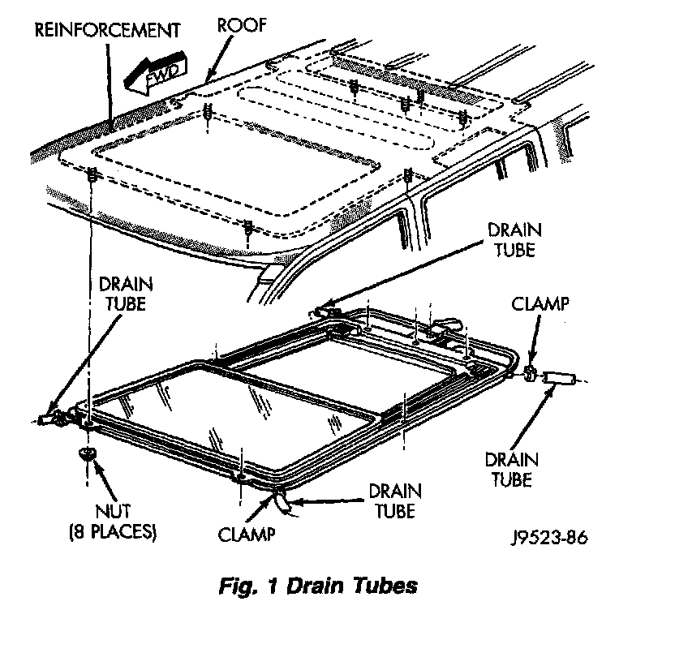
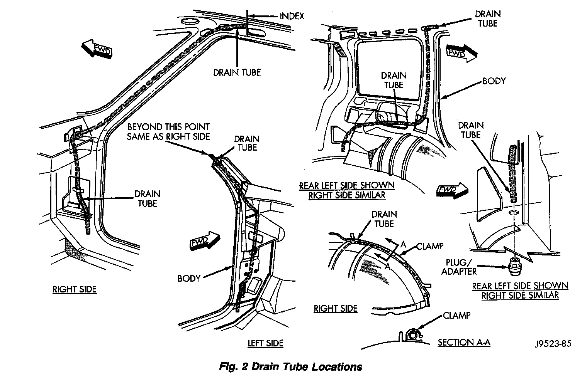

Sunroof / Moonroof Drain: Service and Repair
DRAIN CHANNELREMOVAL
1. Move glass to vent position.
2. Remove mechanism covers and glass panel.
3. Remove screws holding drain channel to sup- port frame.
INSTALLATION
1. Reverse preceding operation.
DRAIN TUBE
REMOVAL
1. Remove the headliner to access clamps attaching drain tube to sunroof.

2. Disengage clamps attaching drain tube to sunroof.
3. Tape the end of the old drain tube to the new drain tube. Ensure that the tape build up on the tube ends is not excessive.

4. Remove front/rear trim panels as necessary to disengage clamps securing drain tube to body.
5. Remove the drain tube plug from the underside of the vehicle.
6. From the underside of the vehicle carefully, pull/route the drain tube through the body panel. Applying a soapy water solution to the new tube may aid in this procedure.
INSTALLATION
1. Install the plug adapter to the bottom of the drain tube.
2. Engage clamps securing drain tube to body.
3. Install front/rear trim panels as necessary.
4. Install drain tube to sunroof and engage clamp.
5. Install the headliner.